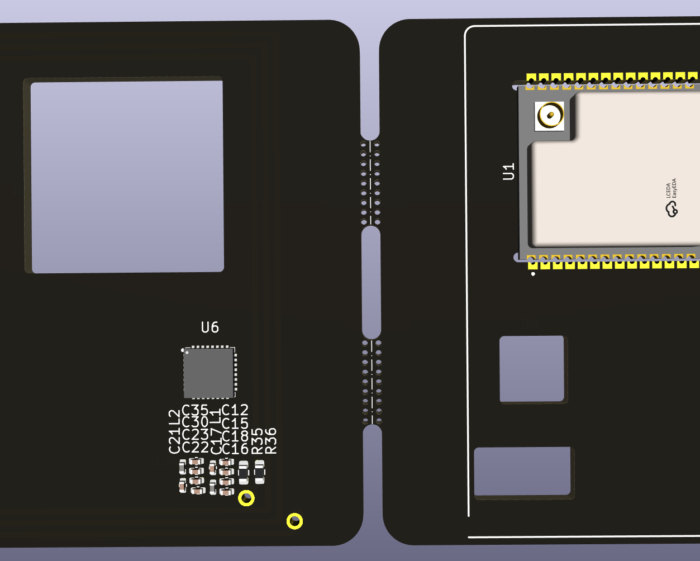
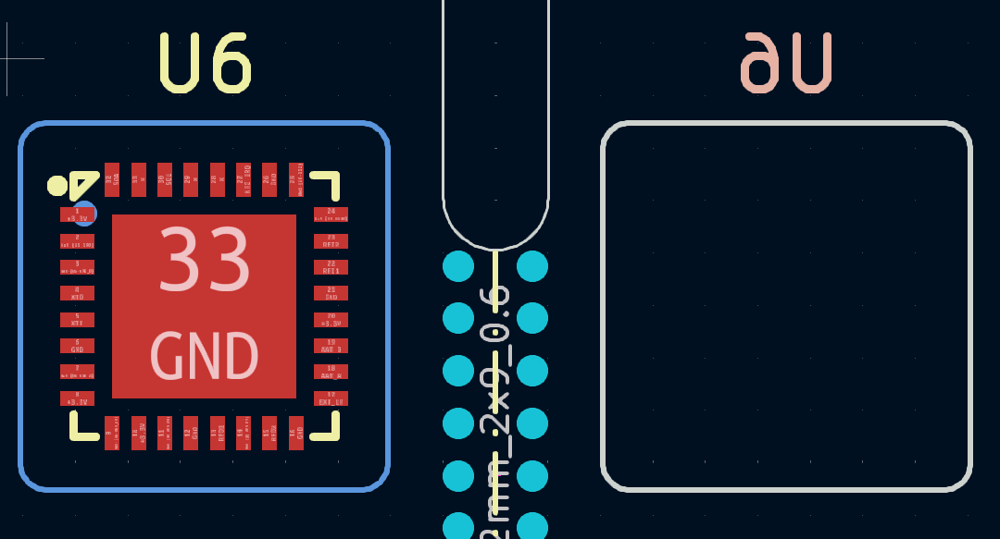
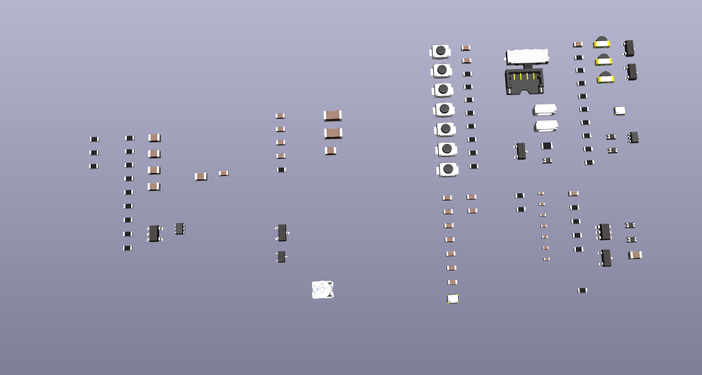

PenCard32
An RF toolkit that fits into your wallet ^^
Features
ESP-32 processor with U.FL connector
onboard 2.54GHz chip antenna with U.FL to MHF4 cable
ST253916 NFC controller (read, write, emulate)
IR LEDs + Reciever (38kHz)
0.96" OLED (might switch to a smaller one if i find one tho)
150mAh 3mm LiPo, max. 3µA shutdown current
dimming switch for all those blinky LEDs
Design files git repo:
github.com/Volkov997/pen-card
.
Construction
The card is constructed from two stacked 1.6mm PCBs, for a full height of 3.2mm, width and height being 86mm x 54mm. Components are chosen and placed as to not stick out. Although not everything placed yet, here is a 3d model of the raw PCB:
And how it should look when stacked:
the two pcbs are placed side by side and connected by mousebites. 
This
KiCad plugin i wrote allows me to draw board cutouts on a layer like User.2 inside a footprint, and then places the actual cutout on the PCB that will be stacked on top. 
Design Files
Here are both the Schematic and PCB as a PDF:
TODO
right now there is no space for the onboard antenna cable (between ESP U.FL and antenna MHF4), the ESP-32 has to be rotated and both sockets have to be inside the NFC antenna
place the rest of the components (LEDs, Buttons and more Caps) 
simulate the pcb antenna and adjust the RF tuning (im gonna use SonnetLite for the sim and the manufacturers calculator for the ST25 matching ciruit)
check with an RF expert i know lol
maybe add the CC110L for Sub-Ghz capabilites
different charging connector? the UART connector already has a plug and the proper connections, maybe ill find a more convinient one for charging tho
This project was made/started for
Hackclub Journey
by
@Volkov